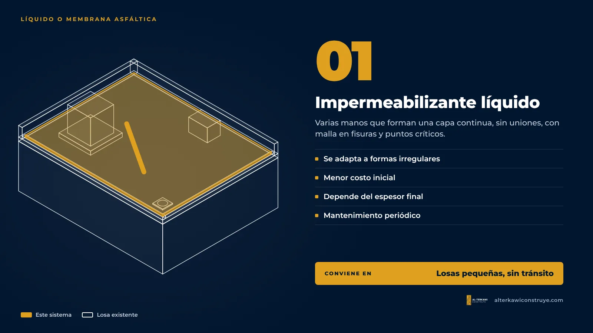
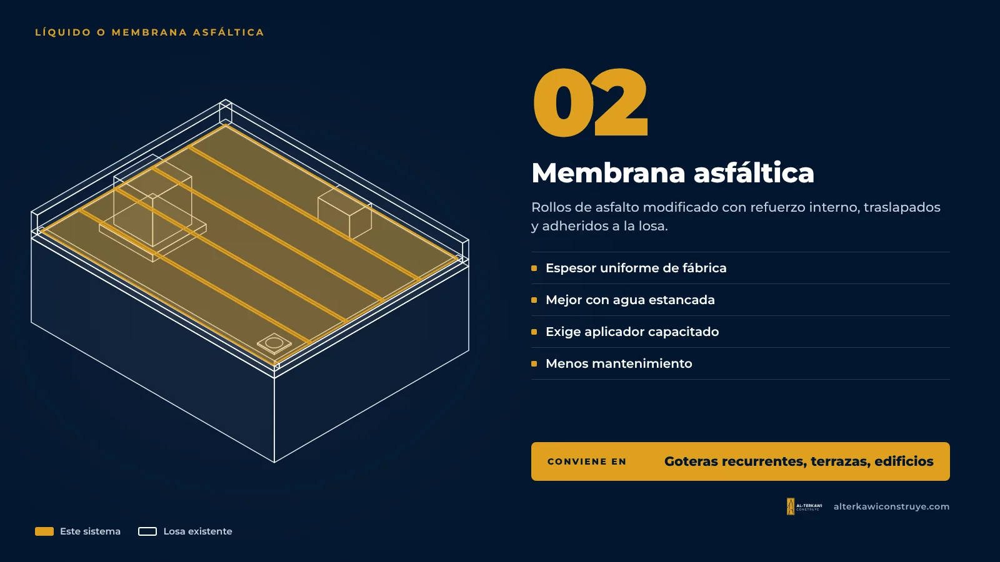

Impermeabilizante líquido o membrana asfáltica: ¿cuál necesita tu losa?
La pregunta que más nos hacen es «¿qué producto le pongo a mi losa?». La respuesta honesta es: depende de la losa. No existe un producto que sirva para todo, y elegir mal es la razón más común por la que una impermeabilización dura un invierno en lugar de varios años.
Impermeabilizante líquido

Se aplica como una pintura espesa, en varias manos, y forma una capa continua sin uniones. En muchos sistemas se refuerza con una malla en las fisuras y los puntos críticos.
- Ventajas: se adapta bien a formas irregulares, es más rápido de aplicar y suele tener menor costo inicial.
- Limitaciones: su desempeño depende mucho del espesor final y de la preparación; requiere mantenimiento periódico.
- Conviene en: losas pequeñas, sin tránsito, con pocas fisuras, o como mantenimiento de un sistema existente en buen estado.
Membrana asfáltica

Son rollos de asfalto modificado con un refuerzo interno que se adhieren a la losa (con soplete o autoadhesivos, según el producto), traslapando cada rollo. Las membranas autoprotegidas traen una cara terminada, por ejemplo con lámina de aluminio o gránulos minerales, que resiste el sol.
- Ventajas: espesor uniforme de fábrica, mayor resistencia mecánica y mejor desempeño en losas con muchas fisuras o con agua estancada.
- Limitaciones: exige un aplicador capacitado; los traslapes y los encuentros deben quedar perfectos.
- Conviene en: losas medianas o grandes, goteras recurrentes, edificios, terrazas y losas con equipos.
Comparación rápida
| Líquido | Membrana asfáltica | |
|---|---|---|
| Costo inicial | Menor | Mayor |
| Espesor | Depende de la aplicación | Uniforme de fábrica |
| Losas irregulares | Muy bueno | Bueno, con más detalles |
| Agua estancada | Limitado | Mejor desempeño |
| Mantenimiento | Más frecuente | Menos frecuente |
«Pintar» no es impermeabilizar
Una mano de pintura «impermeable» sobre una losa sucia y fisurada no es un sistema. Un sistema incluye preparación, imprimación cuando corresponde, tratamiento de puntos críticos, la capa impermeable con el espesor correcto y, en algunos casos, una protección final. Por eso trabajamos con sistemas completos de fabricante, como los de Imptek, aplicados por capas y con garantía registrada.
Cómo lo decidimos
En el diagnóstico revisamos tamaño, pendientes, fisuras, uso (si se camina o hay equipos) y presupuesto. Con eso te proponemos tres opciones —Básico, Estándar y Premium— explicando qué sistema lleva cada una.
Siga leyendo

¿No sabes qué sistema necesita tu losa?
En el diagnóstico te decimos cuál conviene y te damos tres opciones de precio.

Arquitecto en Guayaquil, Samborondón y Daule. Impermeabilización de losas y cubiertas con garantía, diseño y obra.